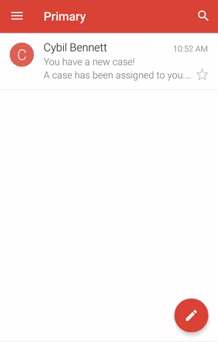
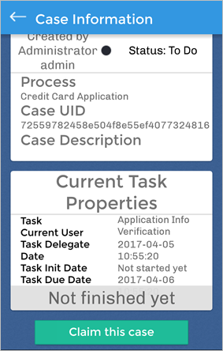
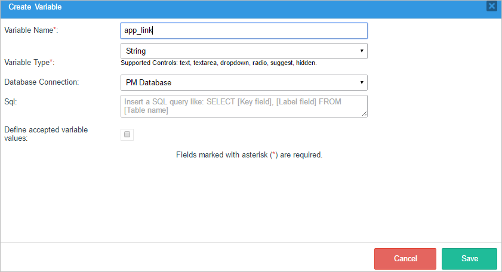
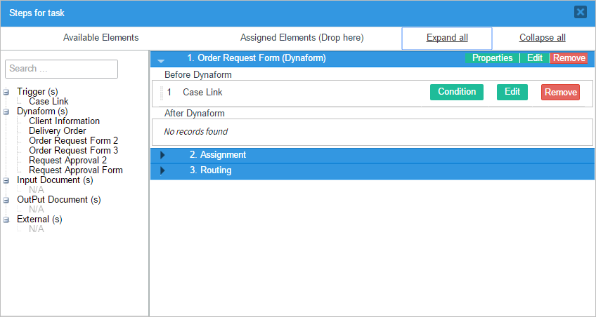
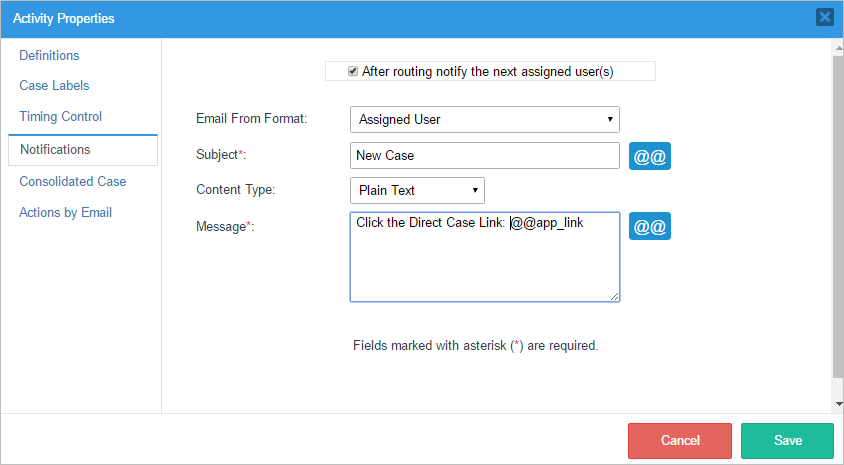
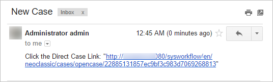
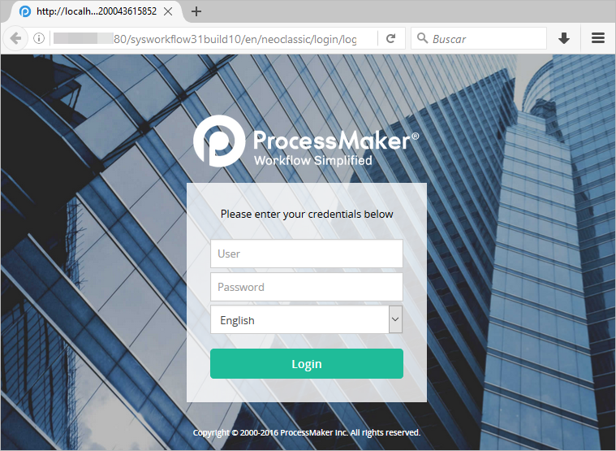
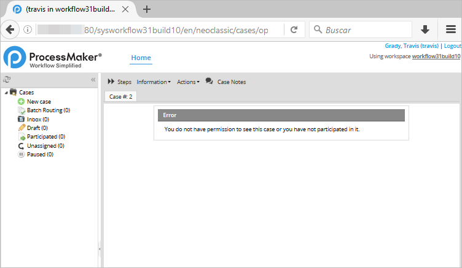
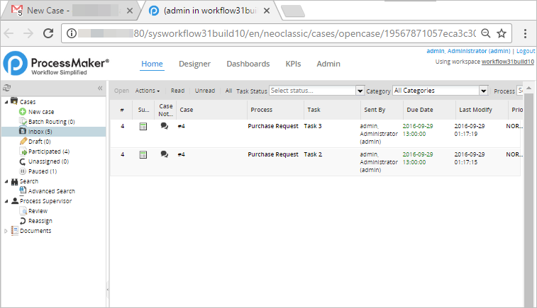

- 1. Overview
- 2. Process Functions
- 3. Task Functions
- 4. Dynaform and Field Functions
- 5. Case Functions
- 6. Case Routing Functions
- 7. Case Notes Functions
- 8. User Functions
- 9. Group Functions
- 10. Email Functions
- 11. Document Functions
- 12. Unique ID Functions
- 13. Date Functions
- 14. String Functions
- 15. Database Functions
- 16. Grid Functions
Case Functions
PMFCaseList()
PMFCaseList() returns a list of the pending cases (i.e., cases that have a status of "To Do" or "Draft") belonging to a specified user. Note that the specified user must be designated to work on the current task of these cases.
Parameters:
- string userUID: The unique ID of a user who is assigned to work on the cases.
Return Value:
A list of cases, with the following structure:
Where:
- string guid: The unique ID of a case.
- string name: The label of a case.
- string status: The status of a case.
- int delIndex: The current delegation index.
Example:
PMFTaskCase()
PMFTaskCase() returns all the tasks that have open delegations in the specified case.
Parameters:
- string caseUID: The unique ID of a case.
Return Value:
A list of tasks, with the following structure:
Where:
- string guid: The unique ID of a task.
- string name: The name of a task.
Example:
Consideration
The use of PMFTaskCase() function when there is a Script Task inside parallel tasks is considered as a bad practice. This is because threads that are after a Script Task are not registered yet in the database, thereby generating inconsistency in the data that the PMFTaskCase() function returns.
By example, check the following flow:

If PMFTaskCase() function is used after Task 1, Tasks 3 and 4 are not yet registered in the database.
So the tasks that return PMFTaskCase() function will not include threads 3 and 4 and data will be incorrect.
PMFNewCase()
PMFNewCase() creates a new case starting in the specified task.
Parameters:
- string processUID: The unique ID of the process, which can be found in the following ways:
- Use the
@@PROCESSsystem variable to get the unique ID of the current process. - Use the PMFProcessList() function or processList() web service.
- Query the wf_<WORKSPACE>.PROCESS.PRO_UID field in the database or use a query like:
SELECT PRO_UID FROM PROCESS WHERE PRO_TITLE = 'Expense Report Process'
- Use the
- string userUID: The unique ID of the user, which can be found in the following ways:
- Use the @@USER_LOGGED system variable to get the unique ID of the user currently logged in.
- Use the PMFUserList() function or userList() web service.
- Query the wf_<WORKSPACE>.USERS.USR_UID field in the database.
- string taskUID: The unique ID of the task, which can be found in the following ways:
- Use the
@@TASKsystem variable to get the unique ID of the current task. - Use the PMFTaskList() function or taskList() web service.
- Query the wf_<WORKSPACE>.TASK.TAS_UID field in the database or get the starting task of the current process with the following query:
executeQuery("SELECT TAS_UID FROM TASK WHERE PRO_UID='" .@@PROCESS . "' AND TAS_START='TRUE'")
- Use the
- array variables: An associative array of the variables that will be sent to the case. The keys are the variable names and the values are the values of the case variables. If the case variable is a grid, then set the value to an associative array of associative arrays. See Example 3 below. If no variables are needed, then set to an empty array: array()
- string status: (Optional) The new case status. If set to
"TO_DO"the new case will be displayed directly in the user's inbox tray. If set to"DRAFT"or not included, the case will be displayed in the draft tray.
Return Value:
If an error occurred, it returns zero. Otherwise, it returns a string with the case UID of the new case.
Example 1:
Create a new case of the current process, designating the current user to work on the new case. The starting task ID is hard coded in the trigger code and no case variables are set in the new case. After creating the new case, call Cases::LoadCase() to find out the new case number and the name of its assigned user. Then, call the G::SendMessageText() function to display a message in the next screen about the new case.
$newCaseUID = PMFNewCase(@@PROCESS, @@USER_LOGGED, $taskUID, array(), "TO_DO");
//if a new case was created, display a message in the next screen:
$g = new G();
if ($newCaseUID) {
$c = new Cases();
$aCaseInfo = $c->LoadCase($newCaseUID, 1);
$msg = 'New Case #' . $aCaseInfo['APP_NUMBER'] . ' is assigned to ' . $aCaseInfo["CURRENT_USER"];
$g->SendMessageText($msg, 'INFO');
}
else {
$msg = "Unable to create new case." . isset(@@__ERROR__) ? @@__ERROR__ : '';
$g->SendMessageText($msg, 'ERROR');
}
Example 2:
Look up the ID of a process named "Expense Report Process" and its starting task in the database. Then, call the Derivation::getAllUsersFromAnyTask() method to get an array of the users who are assigned to that starting task. Use the rand() function to randomly choose one to assign to the new case. Set the values of case variables named "Model", "Price" and "OrderDate" in the new case.
$result = executeQuery("SELECT PRO_UID FROM PROCESS WHERE PRO_TITLE = 'Expense Report Process'");
$processUID = $result[1]['PRO_UID'];
//Look up the UID of the starting task for the process:
$result = executeQuery("SELECT TAS_UID FROM TASK WHERE PRO_UID='$processUID' AND TAS_START='TRUE'");
$taskUID = $result[1]['TAS_UID'];
//Randomly choose a user from the list of assigned users for the starting task:
$d = new Derivation();
$aUsers = $d->getAllUsersFromAnyTask($taskId);
if (count($aUsers) == 0) {
throw new Exception("There are no assigned users for task $taskUID.");
}
$noUser = rand(0, count($aUsers)-1);
$userUID = $aUsers[$noUser];
//Create an associative array of case variables named "Model", "Price" and "OrderDate":
$aData = array('Model' => 'Acme Coyote Trap', 'Price' => 29.99, 'OrderDate' => '2010-12-31');
PMFNewCase($processUID, $userUID, $taskUID, $aData);
Example 3:
Start a new case, setting a grid case variable named "clientsGrid" that has the fields "firstName", "lastName" and "telephone" and has 3 rows of data:
$aGrid = array(
"1" => array("firstName" => "Greg", "lastName" => "Brown", "telephone" = "471.826-4329"),
"2" => array("firstName" => "Anne", "lastName" => "Smith", "telephone" = "913.626-9518"),
"3" => array("firstName" => "Sally", "lastName" => "Slim", "telephone" = "765.652-8608")
);
$newCaseId = PMFNewCase(@@PROCESS, @@USER_LOGGED, $taskUID, array("clientsGrid" => $aGrid), "TO_DO");
PMFNewCaseImpersonate()
PMFNewCaseImpersonate() creates a new case. It is similar to PMFNewCase(), but it impersonates the session variables, so it is more robust than PMFNewCase().
Parameters:
- string processUID: The unique ID of the process.
- string userUID: The unique ID of the user.
- array variables: An associative array of the variables that will be sent to the case. The array keys are the variable names and the array values are the values of the case variables. See PMFSendVariables() for the format of different variables in ProcessMaker. If no variables are needed, then set to an empty array:
array() - string taskUID: Optional. The unique ID of the task where the case will start. If the process only has one starting task or the user is only assigned to one of the starting tasks, then it is not necessary to specify the task.
Return Value:
Returns the new case UID; otherwise, an error message will be displayed.
Note: The status of the new case will automatically be set to DRAFT. To change the status so the new case will appear in the user's Inbox (instead of the Draft box), see the Create new case and change its status section.
Example:
PMFNewCaseImpersonate(@@PROCESS, @@USER_LOGGED, $aData);
PMFPauseCase()
PMFPauseCase() pauses a specified case.
Parameters:
- string caseUID: The unique ID of the case, which can be found in the following ways:
- Use the
@@APPLICATIONsystem variable to get the unique ID of the current case. - Use PMFCaseList(), WSCaseList(), or the caseList() web service.
- Use the
- int delIndex: The delegation index of the current task in the case. For the current case, use the system variable
@%INDEX. - string userUID: The unique ID of the user who will pause the case. Note that PMFPauseCase() allows any user to pause any case. The user's unique ID can be found in the following ways:
- Get the UID of the currently logged-in user with the
@@USER_LOGGEDsystem variable or$_SESSION['USER_LOGGED']. - Use the PMFUserList() or WSUserList() functions, or the userList() web service.
- Query the wf_<WORKSPACE>.USERS.USR_UID field in the database with executeQuery().
- Get the UID of the currently logged-in user with the
- string unpauseDate: Optional. The datetime in the format
"YYYY-MM-DD HH:MM:SS"indicates when the case will be unpaused. If set to NULL or "" (empty string), then the case will be paused indefinitely, until a user manually unpauses it. If the hours, minutes or seconds aren't included in the datetime, then they automatically set to zero. Note that the case will be automatically unpaused at the configured datetime by the cron.php script, so the server needs to periodically execute this script. Ex:"2015-12-31 17:59:59"or"2017-01-08"
Return Value:
Returns 1 if the case is paused successfully; otherwise, returns 0 if an error occurred.
Example:
Pause the current case. Then, call header() to redirect the web browser to the Inbox and call die() to stop the case from trying to advance to the next step.
Note 1: If calling die() in a trigger that is executed immediately after a Dynaform, it will prevent the form's data from being saved. Therefore it is recommended to set this trigger to execute before the next step in the task (or before assignment if the last step in the task), so that the form's data will be saved.
Note 2: If the $caseUID is set to the ID of the current case and the $delIndex is set to the delegation index of the current task, then PMFPauseCase() will call die() to prevent the current case from advancing. This means that any code after calling PMFPauseCase() will not be executed.
PMFUnpauseCase()
PMFunpauseCase() unpauses a specified case.
Parameters:
- string caseUID: The unique ID of the case, which can be found in the following ways:
- Use the
@@APPLICATIONsystem variable to get the unique ID of the current case. - Use the caseList() web service.
- Use the
- string delIndex: The delegation index of the current task in the case. For the current case, use the system variable
@%INDEX. - string userUID: The unique ID of the user who will unpause the case, which can be found in the following ways:
- Get the UID of the currently logged-in user with the
@@USER_LOGGEDsystem variable or $_SESSION['USER_LOGGED']. - Use the PMFUserList() or WSUserList() functions, or the userList() web service.
- Query the wf_<WORKSPACE>.USERS.USR_UID field in the database with executeQuery().
- Get the UID of the currently logged-in user with the
Return Value:
Returns 1 if the case is unpaused successfully; otherwise, returns 0 if an error occurred.
PMFDeleteCase()
PMFDeleteCase() deletes a specified case. Note that the case will be deleted completely and it will not appear in the Participated tray.
To cancel a case use PMFCancelCase() instead of PMFDeleteCase().
Parameters:
- string caseUID: The unique ID of a case. For the current case use the system variable
@@APPLICATION. Other case UIDs can be found with PMFCaseList(), WSCaseList(), caseList() or by querying the field wf_<WORKSPACE>.APPLICATION.APP_UID.
Return value:
- Returns 1 if the case was successfully deleted, otherwise returns 0 if an error occurred.
Warning: If the current case is the one that is starting, the case cannot be deleted.
Example:
This example uses header() with "Location: casesListExtJsRedirector" to go back to the list of cases (inbox) after deleting the case.
PMFCancelCase()
PMFCancelCase() cancels a specified case in "TO DO" status. A canceled case can be reviewed in the Participated tray. Use PMFDeleteCase for cases in "DRAFT" status that cannot be canceled.
Parameters:
- string caseUID: The unique ID of the case, which can be found in the following ways:
- Use the
@@APPLICATIONsystem variable to get the unique ID of the current case. - Use the PMFCaseList(), WSCaseList() or the caseList() web service.
- Use the
- int delIndex (Optional): The delegation index of the current task in the case. For the current case, use the
@%INDEXsystem variable. - string userUID (Optional): The unique ID of the user who will cancel the case. For the currently logged-in user, use the
@@USER_LOGGEDsystem variable.
Return value:
- Returns 1 if the case was successfully canceled.
- Returns 0 if the case is in "DRAFT" status.
Example:
The following trigger code cancels the current case:
if (@@return) {
print "Case cancelled."
}
Warning: As of ProcessMaker 3.3.0 to cancel cases with parallel threads, provide only the caseUID parameter like PMFCancelCase(@@APPLICATION).
PMFUnCancelCase()
PMFUnCancelCase() restores a canceled case. A case cancelled can be reviewed in the inbox tray. Take into consideration that only roles with the PM_UNCANCELCASE permission will be able to restore a case.
Parameters:
- string caseUID: The unique ID of the case, which can be found in the following ways:
- Use the
@@APPLICATIONsystem variable to get the unique ID of the current case. - Use the PMFCaseList(), WSCaseList() or the caseList() web service.
- Use the
- string userUID: The unique ID of the user who will receive the case when uncancelling the case. For the currently logged-in user, use the
@@USER_LOGGEDsystem variable.
Return value:
Returns 1 if the case was successfully uncancelled, otherwise returns 0 if an error occurred. If the user does not have the PM_UNCANCELCASE permission assigned, it will return 0.
Example:
The following trigger code uncancels the current case and uses the die() function to prevent the next step from being executed:
Warning: If the case canceled has multiple threads opened, all threads are restored and assigned to the user provided in this function.
PMFSendVariables()
PMFSendVariables() sends an array of case variables to a specified case instead of the one running this function. The main objective when using this function is to update variable(s) data, using ProcessMaker variable prefixes (@@, @=, etc.), from other cases instead of the current case. For example, Case A using PMFSendVariables could update variable(s) data from Case B.
These variables are stored in the wf_<WORKSPACE>.APPLICATION.APP_DATA field and can be displayed by any subsequent Dynaform that has a field name that is the same as the case variable name.
Parameters:
- string caseUID: The unique ID of the case that will receive the variable. Note that the case ID changes with each new task in the process.
- array variables: An associative array that will hold the case variables to sent to the case. The keys are the case variable names and the values are the values of the case variables.
Return Value:
Returns 1 if the variables were sent successfully to the case; otherwise, returns 0 if an error occurred.
Example:
PMFSendVariables(@@APPLICATION, $aData);
setCaseTrackerCode()
setCaseTrackerCode() sets the code and PIN of a case, which are used when an unregistered user logs into the Case Tracker to view the details of a particular case. By default, the code for a case is its case number and its PIN (public identification number) is a semi-random string of 4 characters (numbers and letters) autogenerated by ProcessMaker; however, setCaseTrackerCode() can set the case code and PIN to any desired values.
Parameters:
- string caseUID: The unique ID of a case. For the current case use the system variable
@@APPLICATION. Other case UIDs can be found with PMFCaseList(), WSCaseList(), caseList() or by querying the wf_<WORKSPACE>.APPLICATION.APP_UID field in the database. - string code: The new code of a case up to 100 characters long, which will be stored in the wf_<WORKSPACE>.APPLICATION.APP_PROC_CODE field in the database. To keep the case code as the case number, set it to @@APP_NUMBER for the case number of the current case or for another case look up its case number in the wf_<WORKSPACE>.APPLICATION.APP_NUMBER field in the database.
- string PIN: Optional. The new PIN (personal identification number) in UPPERCASE, which will be stored in the wf_<WORKSPACE>.APPLICATION.APP_PIN field as an MD5 hash and will be available in the system variable
@@PINfor the current case. If not included or set to''(an empty string), then the PIN will not be changed. Note that if the PIN is not in UPPERCASE, then it will not be possible to login to the Case Tracker.
Return Value:
If successful, returns one; otherwise returns zero or an error number.
Example:
PMCaseLink()
The Direct Case Link feature makes it possible to open a case inside the ProcessMaker Web server or ProcessMaker Mobile app through a link. This link can be used in notifications, templates, output documents, links inside Dynaforms or defined and stored in case variables. The Direct Case Link is unique regardless of case status. This means that the link will be generated according to the case status and will open the case in the corresponding task.
The PMCaseLink function creates a direct link that redirects the user to a case.
Parameters:
- string caseUID: (Required) The unique ID of the case, which can be found in the following ways:
- Use the
@@APPLICATIONsystem variable to get the unique ID of the current case. - Use PMFCaseList(), WSCaseList(), or the caseList() web service.
- Use the
- string workspace: (Optional) The workspace. If not set, the current workspace where the case is executed will be selected.
- string language: (Optional) The language the case will be displayed in. If not set, the case will be opened in the default language configured in the user's profile. If the user didn't define a default language or is using the community edition, the default system language is selected (Admin/settings/system/default language).
- string skin: (Optional) The skin name. If not set, the default skin is selected.
Return Value:
Returns a string if the case link was generated successfully. Otherwise, returns false if an error ocurred.
Example:
The returned value will be a link to open the case:
Direct Case Link Uses
The URL generated by the direct case link function can be used in different cases:
- Notifications
- Email events
- Templates
- Output Documents
- Variables (Defined or stored)
Opening the Link on Mobile Devices
In previous versions, when the direct case link was opened on a mobile device, the link was opened in the device's browser.
As of ProcessMaker 3.2, a special flag can be set in the env.ini configuration file of each workspace or in the ProcessMaker installation to open the link generated by the direct case link function directly in the ProcessMaker mobile application.
Set to flag to 1 to open the case in the ProcessMaker mobile application. Note that the user assigned to the case must be logged in to the mobile app.
In the following example, a task notification has been sent to the next assigned user. The user taps the case link sent in the email notification. Since the device does NOT have a default browser assigned to open the link, a browser has to be selected.
The device will open the browser for a second to verify the flag's value, and then ProcessMaker Mobile will open automatically displaying the case associated with the case link.
If the redirect_to_mobile flag is set to 0 or not set at all, when the user taps the case link on a mobile device, the case will open in the browser that the user selects.

Please note the following points:
- If the application is not installed on the mobile device and the
redirect_to_mobileflag is set to 1, the case will NOT be opened. If the case was already routed, or is not assigned to the user logged in to the mobile application, the following alert will be displayed and the case won't be displayed.

If the case is unassigned and the user who is logged in to the mobile application is assigned to the assignment pool, the following screen will be displayed to claim the case.

Example in a Trigger
In order to do the example follow these steps:
1. Create a new string variable named app_Link to store the link.

2. Create a trigger named Case Link and place the following code:

3. Place the trigger before Dynaform in the first step of the first task to generate the Direct Case Link.

4. Create a notification in the first task to notify the next assigned user(s) by email.

5. When running a new case, after the first task is routed, an email containing the Direct Case Link will be sent to all the users assigned to the next task.

Open the Case Using the URL
Open the case in your favorite browser using the generated Direct Case Link. This link opens the ProcessMaker interface, including the main menu and the case list (inbox, draft, etc.). The case linked to by the Direct Case Link will be displayed in the central area.

Warning: As of ProcessMaker 3.3.3, in Internet Explorer 11, the link opens only the form in a new tab as it does when opening the cases from the Inbox.
Permissions and Considerations
ProcessMaker Active Session
To open the case linked to by the Direct Case Link, the user needs to be logged into ProcessMaker. Therefore, take into consideration the following situations:
- Case opened in a new tab: If the link is open inside a browser with an active ProcessMaker session, then the case will be opened in a new tab. An active session means that the user has already logged in using the ProcessMaker login screen or the configured SSO.
- The user is not logged in: If the user is not logged into Processmaker, then the Processmaker login page or the Single Sign On Login page is displayed.

Once logged in, ProcessMaker will be automatically redirected to the case.
Case Status and User Permissions
The same Direct Case Link can be used to open the case for the user current assigned to the case, the supervisor or another user that has participated in the case. ProcessMaker will display the case's information depending on the user's permissions and the case status. The possible conditions when opening the case are described as follows:
- The user is not participating in the case: If the user doesn't participate in the case and doesn’t have specific process permissions, generic case information is displayed.

- The user participated in the case and is assigned to a task: If the user is currently assigned to a task, then the browser is automatically redirected to the specific task in the case.
- The user participated in the case but is not currently assigned to the current task/step:
If the user participated in the case and is not assigned to a task, or the case is completed, paused, or deleted, then the summary form of the case is displayed.

- The user participated in the case and is assigned to more than one task: If the user has more than one task in a case in their inbox, the inbox is displayed filtered by the case number to show all the parallel tasks assigned to the user in the same case. The user must select the task to open in the inbox.

Other considerations
Take into consideration the following points:
- A Direct Case Link can be generated in a different language, skin or workspace to the one that was generated.
- If the language parameter was set, the user that receives the Direct Case Link will open ProcessMaker in the language defined in the link, regardless of the profile language.